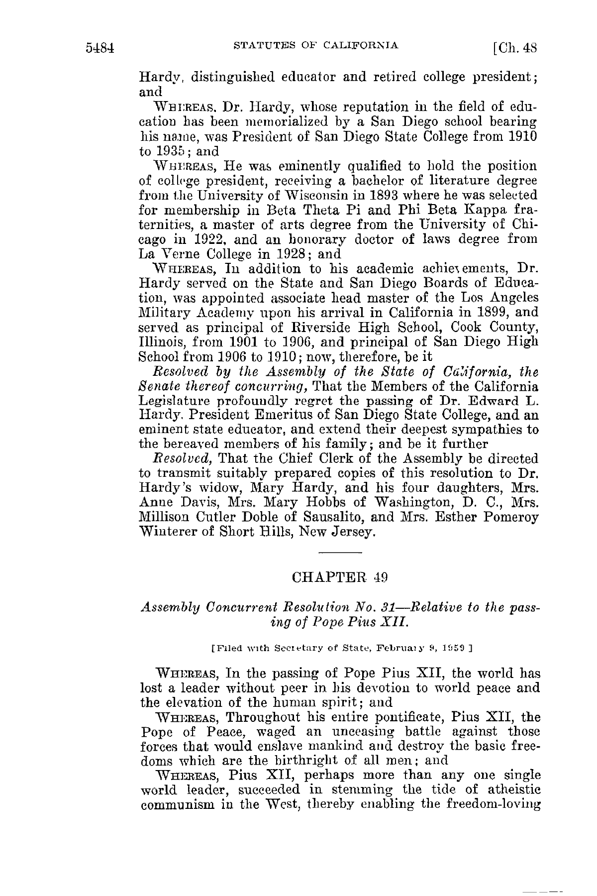
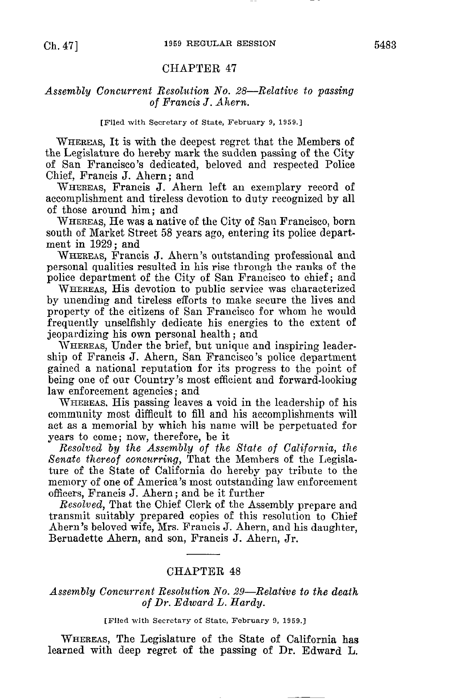

statutes-1959-vol2-printed-p5484-clause-detail.pngAssembly Concurrent Resolution No. 29 / Resolution Chapter 48 — transmission-clause verification (stable local images; no external scan host required).
What to verify: On printed page 5484, the final Resolved clause lists four daughters and identifies the Short Hills, New Jersey resident as Mrs. Esther Pomeroy Winterer.
Biographical matches on the same page: San Diego State College president 1910–1935; B.Litt. Wisconsin; M.A. Chicago; honorary LL.D. La Verne College.
statutes-1959-vol2-printed-p5484-clause-detail.png
statutes-1959-vol2-printed-p5484.png
statutes-1959-vol2-printed-p5483.png — ACR No. 29 begins at bottom as Chapter 48.ACR29_Hardy_1959_pp5483-5484.pdf (2 pages)